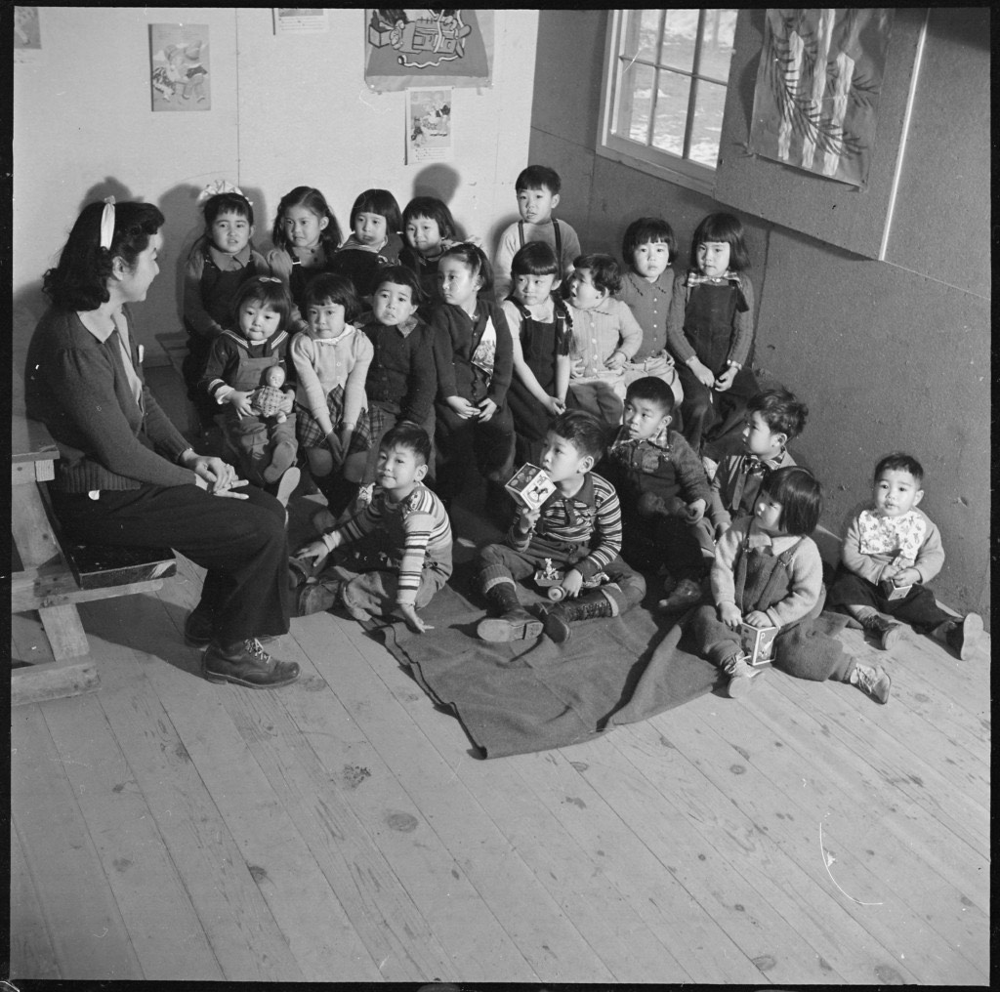
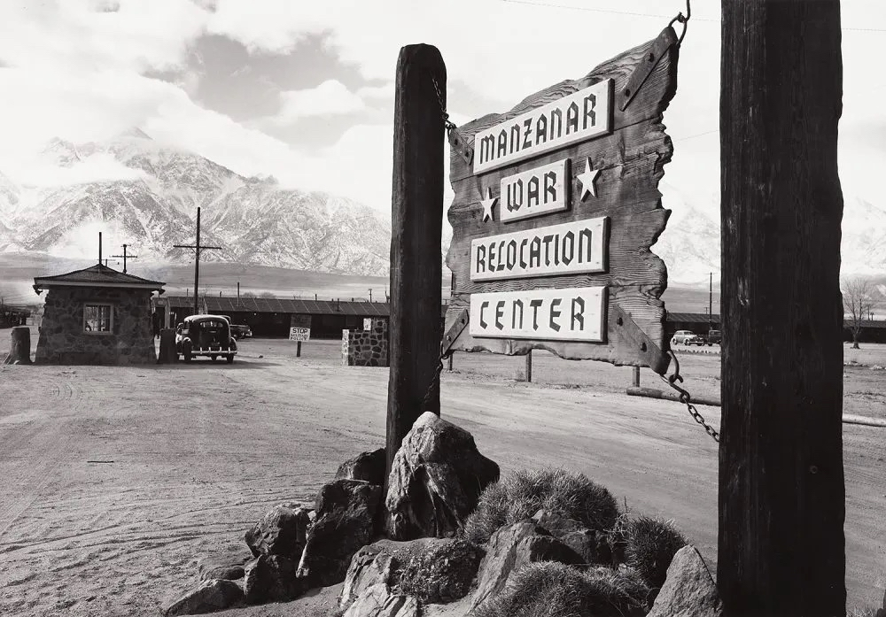
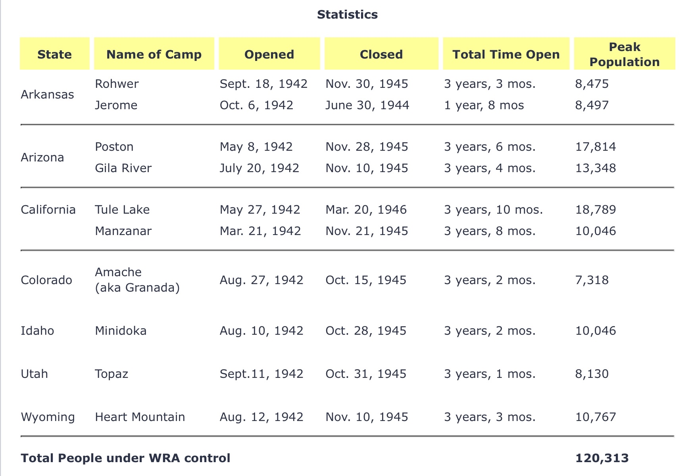

<!DOCTYPE html>
<html lang="en">
<head>
    <meta charset="UTF-8">
    <meta name="viewport" content="width=device-width, initial-scale=1.0">
    <title>Internment of Japanese Americans</title>
    
    <!-- Tailwind CSS pour le style -->
    <script src="https://cdn.tailwindcss.com"></script>
    
    <!-- Configuration pour React et les icônes via Import Map -->
    <script type="importmap">
    {
      "imports": {
        "react": "https://esm.sh/react@18.2.0",
        "react-dom/client": "https://esm.sh/react-dom@18.2.0/client",
        "lucide-react": "https://esm.sh/lucide-react@0.263.1"
      }
    }
    </script>
    
    <!-- Babel pour comprendre le code React -->
    <script src="https://unpkg.com/@babel/standalone/babel.min.js"></script>

    <style>
        /* Masquer la barre de défilement pour la navigation */
        .no-scrollbar::-webkit-scrollbar {
            display: none;
        }
        .no-scrollbar {
            -ms-overflow-style: none;
            scrollbar-width: none;
        }
        body {
            background-color: #F9F8F4;
        }
    </style>
</head>
<body>
    <div id="root"></div>

    <!-- Votre Code React -->
    <script type="text/babel" data-type="module">
        import React, { useState } from 'react';
        import { createRoot } from 'react-dom/client';
        import { 
            BookOpen, Image as ImageIcon, Database, 
            FileText, Link as LinkIcon, Home 
        } from 'lucide-react';

        const ProjectDocumentation = () => {
            const [activeTab, setActiveTab] = useState('home');

            // Configuration des couleurs
            const colors = {
                background: 'bg-[#F9F8F4]', // Off-white / Paper
                textTitle: 'text-orange-600', // Orange for titles
                textBody: 'text-gray-600', // Grey for text
                navActive: 'text-orange-600 border-orange-600',
                navInactive: 'text-gray-400 hover:text-gray-600 border-transparent',
            };

            const navItems = [
                { id: 'home', label: 'Home', icon: Home },
                { id: 'vocabulary', label: 'Vocabulary', icon: BookOpen },
                { id: 'gallery', label: 'Gallery', icon: ImageIcon },
                { id: 'background', label: 'Background', icon: FileText },
                { id: 'sources', label: 'Sources', icon: LinkIcon },
                { id: 'data', label: 'Data', icon: Database },
            ];

            const renderContent = () => {
                switch (activeTab) {
                case 'home':
                    return (
                    <div className="max-w-4xl mx-auto animate-in fade-in duration-500 py-4">
                        <h2 className={`text-3xl font-serif font-bold mb-8 ${colors.textTitle}`}>Essay</h2>
                        
                        <div className={`space-y-6 text-lg leading-relaxed ${colors.textBody} text-justify`}>
                            <p>
                            Fear can make people act in ways they normally would not. It can also make governments make rude decisions. After the attack on Pearl Harbor on December 7, 1941, fear was spread quickly across the United States. Many Americans worried that another attack could happen at any moment. Because of this fear, Japanese Americans were treated with suspicion. They were judged, but not for what they did, but by where their ancestors came from. More than 120,000 people of Japanese ancestry were forced to leave their homes and live in internment camps. According to the U.S. National Archives, about two-thirds of them were American citizens. They had done nothing wrong. Still, the government treated them as potential enemies. The internment of Japanese Americans shows how quickly fear can lead to injustice, even in a country that values freedom.
                            </p>
                            
                            <p>
                            Discrimination against Japanese Americans did not start with World War II. For years before the war, Japanese immigrants faced unfair laws and social prejudice. They were often not allowed to own land or take certain jobs. Historian Roger Daniels, in Prisoners Without Trial, explains that these negative attitudes were strongest on the West Coast. After Pearl Harbor, these old prejudices became even stronger. Many people assumed Japanese Americans could not be trusted, even though there was no evidence. In fact, a 1941 report from the Office of Naval Intelligence concluded that Japanese Americans were loyal to the United States. The government ignored this report and instead acted on fear and public pressure.
                            </p>

                            <p>
                            On February 19, 1942, President Franklin D. Roosevelt signed Executive Order 9066. This order gave the military the power to remove people from areas considered dangerous. It did not name Japanese Americans directly, but in practice, it affected them almost exclusively. Families were given only a few days to prepare. They could take only what they could carry. Homes, businesses, and farms were often abandoned. Photographs taken by Dorothea Lange show Japanese American families waiting quietly with suitcases and identification tags. Their faces reveal fear, confusion, and sadness. These images capture how sudden and shocking the removal was.
                            </p>

                            <p>
                            After leaving their homes, families were sent to internment camps in remote parts of the country. War Relocation Authority records show that ten main camps existed. The camps were surrounded by barbed wire and guarded by armed soldiers. Families lived in small wooden barracks. There was little privacy. Winters were cold, and summers were extremely hot. Medical care was limited. Life was difficult. Even so, many people tried to build normal lives. They opened schools, published newspapers, and created community activities to support one another. They worked hard to make the camps feel like home.
                            </p>

                            <p>
                            The emotional impact of internment lasted long after the war ended. Being imprisoned by their own government caused fear, anger, and shame. Japanese Americans lost their freedom without a trial, which violated their constitutional rights. In Korematsu v. United States (1944), the Supreme Court supported the government’s policy. Today, this decision is widely criticized. Decades later, the government admitted that internment had been wrong. The report Personal Justice Denied (1982) concluded that internment was caused by racism, fear, and poor leadership—not by military necessity. This led to the Civil Liberties Act of 1988, which included a formal apology and compensation for surviving internees.
                            </p>

                            <p>
                            The internment of Japanese Americans is an important lesson in history. It shows how fear and prejudice can lead to unfair and harmful decisions. It reminds us that civil rights must always be protected, especially in times of crisis. Learning about this event helps people understand the human cost of injustice. It encourages society to value fairness, respect, and justice for everyone, no matter their background.
                            </p>
                        </div>
                    </div>
                    );

                case 'vocabulary':
                    return (
                    <div className="max-w-4xl mx-auto space-y-12 animate-in fade-in duration-500">
                        <div className="text-center mb-12">
                        <h2 className={`text-3xl font-serif font-bold mb-4 ${colors.textTitle}`}>Key Vocabulary</h2>
                        <p className={colors.textBody}>Essential terms to understand the historical context.</p>
                        </div>

                        <div className="grid grid-cols-1 md:grid-cols-2 gap-8">
                        {[
                            { term: "Internment", def: "The imprisonment of people without trial, especially during war." },
                            { term: "Executive Order 9066", def: "A 1942 order that allowed Japanese American internment." },
                            { term: "Civil Liberties", def: "Rights and freedoms protected by the Constitution." },
                            { term: "Reparations", def: "Compensation or payment for past injustices." },
                            { term: "Prejudice", def: "An unfair judgment based on race, religion, or other personal characteristics." },
                            { term: "Barred / Barbed Wire", def: "Used to surround camps and restrict movement." },
                            { term: "Loyalty", def: "Faithfulness to a country or cause." }
                        ].map((item, idx) => (
                            <div key={idx} className="bg-white p-6 shadow-sm border-l-4 border-orange-500">
                            <h3 className={`text-xl font-bold mb-2 ${colors.textTitle}`}>{item.term}</h3>
                            <p className={colors.textBody}>{item.def}</p>
                            </div>
                        ))}
                        </div>
                    </div>
                    );

                case 'gallery':
                    return (
                    <div className="animate-in fade-in duration-500 max-w-6xl mx-auto">
                        <h2 className={`text-3xl font-serif font-bold mb-8 ${colors.textTitle}`}>Visual Archive</h2>
                        <div className="grid grid-cols-1 md:grid-cols-2 gap-8">
                            {/* Image 1: Luggage */}
                            <div className="bg-white p-4 shadow-sm border border-gray-100 flex flex-col">
                            <div className="aspect-[4/3] w-full overflow-hidden mb-4 border border-gray-100">
                                
                            </div>
                            <h3 className={`text-lg font-bold ${colors.textTitle} mb-2`}>Japanese Americans Waiting with Luggage (1942)</h3>
                            <p className="text-sm text-gray-600 mb-2 leading-relaxed">
                                Description: People of Japanese descent lined up with their suitcases before being transported to relocation centers.
                            </p>
                            <p className="text-xs text-gray-400 uppercase tracking-wider mt-auto pt-2 border-t border-gray-100">
                                Source: War Relocation Authority/Library of Congress (from Japanese Americans relocated in 1942).
                            </p>
                            </div>

                            {/* Image 2: Nursery School (Restored) */}
                            <div className="bg-white p-4 shadow-sm border border-gray-100 flex flex-col">
                            <div className="aspect-[4/3] w-full overflow-hidden mb-4 border border-gray-100">
                                
                            </div>
                            <h3 className={`text-lg font-bold ${colors.textTitle} mb-2`}>Nursery School Children at Heart Mountain Relocation Center (1943)</h3>
                            <p className="text-sm text-gray-600 mb-2 leading-relaxed">
                                Description: A group of young children inside one of the ten internment camps, showing daily life for families there.
                            </p>
                            <p className="text-xs text-gray-400 uppercase tracking-wider mt-auto pt-2 border-t border-gray-100">
                                Source: War Relocation Authority/Library of Congress Japanese relocation photographs
                            </p>
                            </div>

                            {/* Image 3: Manzanar */}
                            <div className="bg-white p-4 shadow-sm border border-gray-100 flex flex-col">
                            <div className="aspect-[4/3] w-full overflow-hidden mb-4 border border-gray-100">
                                
                            </div>
                            <h3 className={`text-lg font-bold ${colors.textTitle} mb-2`}>Manzanar War Relocation Center (1943)</h3>
                            <p className="text-sm text-gray-600 mb-2 leading-relaxed">
                                Description: Interned Japanese Americans at Manzanar, photographed by Ansel Adams as part of his documentation of life in the camps.
                            </p>
                            <p className="text-xs text-gray-400 uppercase tracking-wider mt-auto pt-2 border-t border-gray-100">
                                Source: Ansel Adams
                            </p>
                            </div>

                            {/* Image 4: Boys */}
                            <div className="bg-white p-4 shadow-sm border border-gray-100 flex flex-col">
                            <div className="aspect-[4/3] w-full overflow-hidden mb-4 border border-gray-100">
                                
                            </div>
                            <h3 className={`text-lg font-bold ${colors.textTitle} mb-2`}>Three Boys Behind the Barbed Wire (1944)</h3>
                            <p className="text-sm text-gray-600 mb-2 leading-relaxed">
                                Description: A powerful image showing children inside the internment camp behind a fence, taken by internee Toyo Miyatake, who smuggled or improvised his camera to document life inside.
                            </p>
                            <p className="text-xs text-gray-400 uppercase tracking-wider mt-auto pt-2 border-t border-gray-100">
                                Source: Toyo Miyatake
                            </p>
                            </div>
                        </div>
                    </div>
                    );

                case 'background':
                    return (
                    <div className="max-w-3xl mx-auto animate-in fade-in duration-500">
                        <h2 className={`text-3xl font-serif font-bold mb-8 ${colors.textTitle} border-b border-orange-200 pb-4`}>Historical Background</h2>
                        
                        <div className="prose prose-orange prose-lg text-gray-600">
                        <h3 className={`text-xl font-bold mt-8 mb-4 ${colors.textTitle}`}>Events Leading Up to Internment: Cause or Precursor?</h3>
                        <p className="mb-6 leading-relaxed">
                            The internment of Japanese Americans did not happen suddenly. For many years before World War II, Japanese immigrants faced unfair treatment in the United States. They were often not allowed to own land or take certain jobs. Many people treated them differently just because of their race. When Japan attacked Pearl Harbor in 1941, Americans became scared. Fear made people worry that Japanese Americans could be disloyal, even though there was no real proof. Some people think the war caused the internment. But really, it was fear and prejudice that already existed that led the government to act. The war only made it worse.
                        </p>

                        <h3 className={`text-xl font-bold mt-8 mb-4 ${colors.textTitle}`}>Connecting to Current Events</h3>
                        <p className="leading-relaxed">
                            The story of Japanese American internment is still important today. After the September 11 attacks in 2001, many Muslim Americans were treated with suspicion and faced unfair rules. This shows how fear can lead to unfair treatment of entire groups of people. Learning about internment helps us see why civil rights need to be protected, even in scary times. It reminds us that governments and citizens must be careful not to let fear and prejudice take over.
                        </p>
                        </div>
                    </div>
                    );

                case 'sources':
                    return (
                    <div className="max-w-4xl mx-auto animate-in fade-in duration-500 py-4">
                        <h2 className={`text-3xl font-serif font-bold mb-8 ${colors.textTitle}`}>Sources & Reflection</h2>
                        
                        {/* Primary Sources */}
                        <div className="mb-12">
                        <h3 className={`text-2xl font-serif font-bold mb-6 ${colors.textTitle} border-b border-orange-200 pb-2`}>Primary Sources</h3>
                        <ul className="space-y-6">
                            <li className="bg-white p-6 shadow-sm border-l-4 border-orange-500">
                            <h4 className="font-bold text-lg text-gray-800">Executive Order 9066 (February 19, 1942)</h4>
                            <p className="text-sm font-semibold text-gray-600 mb-2">U.S. National Archives</p>
                            <p className="text-gray-600">Official order authorizing removal of Japanese Americans from the West Coast.</p>
                            </li>
                            <li className="bg-white p-6 shadow-sm border-l-4 border-orange-500">
                            <h4 className="font-bold text-lg text-gray-800">Dorothea Lange Photographs of Internment Camps (1942)</h4>
                            <p className="text-sm font-semibold text-gray-600 mb-2">Library of Congress</p>
                            <p className="text-gray-600">Photos showing families with suitcases, highlighting fear and displacement.</p>
                            </li>
                        </ul>
                        </div>

                        {/* Secondary Sources */}
                        <div className="mb-12">
                        <h3 className={`text-2xl font-serif font-bold mb-6 ${colors.textTitle} border-b border-orange-200 pb-2`}>Secondary Sources</h3>
                        <ul className="space-y-6">
                            <li className="bg-white p-6 shadow-sm border-l-4 border-orange-400">
                            <h4 className="font-bold text-lg text-gray-800">Daniels, Roger. Prisoners Without Trial (1993)</h4>
                            <p className="text-sm font-semibold text-gray-600 mb-2">Oxford University Press</p>
                            <p className="text-gray-600">Historical analysis of Japanese American internment, causes, and effects.</p>
                            </li>
                            <li className="bg-white p-6 shadow-sm border-l-4 border-orange-400">
                            <h4 className="font-bold text-lg text-gray-800">Commission on Wartime Relocation and Internment of Civilians. Personal Justice Denied (1982)</h4>
                            <p className="text-sm font-semibold text-gray-600 mb-2">U.S. Government Printing Office</p>
                            <p className="text-gray-600">Investigation concluding internment was racially motivated and unjust.</p>
                            </li>
                        </ul>
                        </div>

                        {/* Reflection Section */}
                        <div>
                        <h3 className={`text-2xl font-serif font-bold mb-6 ${colors.textTitle} border-b border-orange-200 pb-2`}>Reflection</h3>
                        <div className={`space-y-6 text-lg leading-relaxed ${colors.textBody} text-justify`}>
                            <p>
                            For my project, I used two primary sources and two secondary sources. The primary sources were Executive Order 9066 and photographs by Dorothea Lange. The executive order showed how the government officially allowed Japanese Americans to be removed from their homes, which directly connects to my essay where I explained how families had to leave quickly with very little time to prepare. The photographs made the event feel real and personal. Seeing families waiting with their suitcases helped me understand the fear and sadness they must have felt, which I tried to describe in my essay.
                            </p>
                            <p>
                            The secondary sources were Roger Daniels’ book Prisoners Without Trial and the report Personal Justice Denied. Daniels helped me understand the history of discrimination against Japanese Americans before the war, which I included in my essay to show that internment did not happen out of nowhere. The report explained that internment was caused by fear, racism, and poor leadership, not by real military threats. This information helped me analyze the government’s decisions and explain in my essay why the internment was unfair.
                            </p>
                            <p>
                            The primary and secondary sources were similar because they all gave important information about internment, but they were different in style and purpose. Primary sources were short, direct, and sometimes emotional, like the photos and the executive order. Secondary sources were longer, explained the context, and helped me understand causes and consequences. I knew the sources were credible because they came from historians, government documents, and trusted archives. The tone also differed: the executive order was formal and legal, the photographs were emotional, and the secondary sources were more analytical.
                            </p>
                            <p>
                            Both types of sources were very useful for my essay. Primary sources helped me describe what actually happened and made the story real for readers. Secondary sources helped me explain why it happened and what it meant in the bigger picture. Using both allowed me to connect the facts, personal stories, and historical analysis, which made my essay stronger and more complete. Together, these sources gave me a full understanding of the internment of Japanese Americans and its significance in history.
                            </p>
                        </div>
                        </div>
                    </div>
                    );

                case 'data':
                    return (
                    <div className="animate-in fade-in duration-500 max-w-5xl mx-auto">
                        <h2 className={`text-3xl font-serif font-bold mb-8 ${colors.textTitle}`}>Historical Data & Maps</h2>
                        
                        <div className="grid grid-cols-1 md:grid-cols-2 gap-8 mb-12">
                        {/* Image 1: Timeline */}
                        <div className="bg-white p-4 shadow-sm border border-gray-100 flex flex-col">
                            <div className="flex-1 mb-4 overflow-hidden border border-gray-100">
                                
                            </div>
                            <h3 className={`text-lg font-bold ${colors.textTitle} mb-2`}>Timeline</h3>
                            <p className="text-sm text-gray-600 mb-2">
                                Short timeline of key events in Japanese American internment during World War II, including executive orders, relocation, and camp operations.
                            </p>
                            <p className="text-xs text-gray-400 uppercase tracking-wider">
                                Source: Japanese Internment timeline graphic, U.S. history educational resources.
                            </p>
                        </div>

                        {/* Image 2: DOJ Map */}
                        <div className="bg-white p-4 shadow-sm border border-gray-100 flex flex-col">
                            <div className="flex-1 mb-4 overflow-hidden border border-gray-100">
                                
                            </div>
                            <h3 className={`text-lg font-bold ${colors.textTitle} mb-2`}>DOJ Internment Camps</h3>
                            <p className="text-sm text-gray-600 mb-2">
                                Map showing Department of Justice internment camps and relocation centers used during Japanese American internment. This map shows relocation centers and Department of Justice camp locations which is useful for illustrating the geography and spread of the camps.
                            </p>
                            <p className="text-xs text-gray-400 uppercase tracking-wider">
                                Source: Digital History (U.S. educational history resource).
                            </p>
                        </div>

                        {/* Image 3: Population Chart */}
                        <div className="bg-white p-4 shadow-sm border border-gray-100 flex flex-col">
                            <div className="flex-1 mb-4 overflow-hidden border border-gray-100">
                                
                            </div>
                            <h3 className={`text-lg font-bold ${colors.textTitle} mb-2`}>Population Statistics</h3>
                            <p className="text-sm text-gray-600 mb-2">
                                Chart showing internment camp peak populations and operation dates.
                            </p>
                            <p className="text-xs text-gray-400 uppercase tracking-wider">
                                Source: Digital History (U.S. educational history resource)
                            </p>
                        </div>

                        {/* Image 4: Khan Academy Map */}
                        <div className="bg-white p-4 shadow-sm border border-gray-100 flex flex-col">
                            <div className="flex-1 mb-4 overflow-hidden border border-gray-100">
                                
                            </div>
                            <h3 className={`text-lg font-bold ${colors.textTitle} mb-2`}>Camp Locations Map</h3>
                            <p className="text-sm text-gray-600 mb-2">
                                Map showing where Japanese American internment and relocation camps were located during WWII.
                            </p>
                            <p className="text-xs text-gray-400 uppercase tracking-wider">
                                Source: Khan Academy historical map.
                            </p>
                        </div>
                        </div>
                    </div>
                    );

                default:
                    return null;
                }
            };

            return (
                <div className={`min-h-screen font-sans ${colors.background} selection:bg-orange-200 selection:text-orange-900`}>
                
                {/* Sticky Header */}
                <header className="sticky top-0 z-50 bg-[#F9F8F4]/95 backdrop-blur-md border-b border-gray-200">
                    <div className="container mx-auto px-6 pt-6 pb-0">
                    
                    {/* Main Title Area */}
                    <div className="flex flex-col md:flex-row justify-between items-start md:items-end mb-6">
                        <div className="max-w-2xl">
                            <div className="flex items-center gap-2 mb-2">
                                <div className="w-3 h-3 bg-orange-600"></div>
                                <p className="text-xs font-bold text-orange-600 uppercase tracking-widest">by Chloé Barge</p>
                            </div>
                        <h1 className={`text-3xl md:text-4xl font-serif font-black tracking-tight leading-tight ${colors.textTitle}`}>
                            Internment of Japanese Americans <br/>
                            <span className="text-gray-800">During WWII</span>
                        </h1>
                        <p className={`text-sm font-medium mt-2 uppercase tracking-widest ${colors.textBody}`}>
                            Historical Analysis & Documentation
                        </p>
                        </div>
                    </div>

                    {/* Navigation Bar */}
                    <nav className="flex space-x-1 overflow-x-auto no-scrollbar pb-1">
                        {navItems.map((item) => {
                        const isActive = activeTab === item.id;
                        const Icon = item.icon;
                        return (
                            <button
                            key={item.id}
                            onClick={() => setActiveTab(item.id)}
                            className={`
                                px-5 py-3 flex items-center gap-2 border-b-2 font-medium text-sm transition-all whitespace-nowrap
                                ${isActive ? colors.navActive : colors.navInactive}
                            `}
                            >
                            <Icon size={16} className={isActive ? 'text-orange-500' : 'text-gray-400'} />
                            {item.label}
                            </button>
                        );
                        })}
                    </nav>
                    </div>
                </header>

                {/* Main Content Area */}
                <main className="container mx-auto px-6 py-12">
                    {renderContent()}
                </main>

                {/* Footer */}
                <footer className="border-t border-gray-200 mt-12 py-8 bg-white">
                    <div className="container mx-auto px-6 text-center text-sm text-gray-400">
                    <p>Educational Project • Sources cited from National Archives & Library of Congress</p>
                    </div>
                </footer>

                </div>
            );
        };

        // Rendu de l'application
        const root = createRoot(document.getElementById('root'));
        root.render(<ProjectDocumentation />);
    </script>
</body>
</html>
